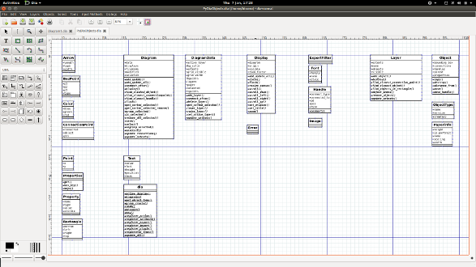

La manera más fácil de escribir complementos para Dia en Python.
Posted on Thu 07 January 2016 in Python
Dia es software libre para la creación de diagramas libre y es multiplataforma. Ya está un poquito viejo, pero siga siendo una gran herramienta. Es muy fácil agregarle funciones nuevas con complementos (plugins) desarrollados en Python pero el proceso mismo de escribir esos complementos es un poco más complicado.
En primero, la interfaz de programación de aplicaciones (API) de Dia para Python es difícil de encontrar en línea. Siempre puedes generar un diagrama de la API desde adentro de Dia mismo pero ese no te daría mucha información y el formato es un poco inconveniente. La API puede ser un poquito difícil de navegar y voy a compartir algunos trucos sobre ese tema en un post más adelante pero el problema más grande se yace en probando los complementos que escribes. Dia carga todos los complementos al inicio y no se pueden modificar durante la ejecución del programa, así que el proceso de probar y depurar resulta laborioso. Es posible escribir y probar las piezas de tu complemento que no dependen en Dia aparte pero una vez que comiences la interacción con la interfaz, se atasca de nuevo.

Frustrado por eso y deseando desarrollar un complemento siguiendo las técnicas de desarrollo guiado por pruebas (TDD), escribí un pequeño modulo de Python que simular la API de Dia. Así que puedes escribir y probar la gran mayoría de tu complemento sin tener que ejecutar Dia en absoluto! Hay limitaciones - por ejemplo cualquiera interacción con la interfaz tiene que ser hecho dentro de Dia, o a mano o con un automation framework y no se puede generar diagramas útiles. Sin embargo, debería reducir la cantidad de tiempo y bugs que cueste poner en marcha tu complemento. No olvides de darle una licencia de software libre y compartirlo con el mundo!
Si eso es algo que te serviría, puedes darle un vistazo ahi. Originalmente, lo desarrolle para satisfacer las necesidades de un proyecto determinado en lo que estaba trabajando asi que hay unas partes que no están completas pero estoy dispuesto de tomar avisos de bugs y pull requests.
Es fácil instalar:
$ python setup.py install
No hay ninguna diferencia en la manera de escribir tu código y cualquier complemento existente puede usar el modulo sin ser modificado. Cuando el complemento se ejecuta fuera de Dia, se carga el modulo de simulación, cuando se ejecuta dentro de Dia, se carga lo verdadero.
Ya estas listo para empezar de escribir complementos para Dia en la manera mas fácil!